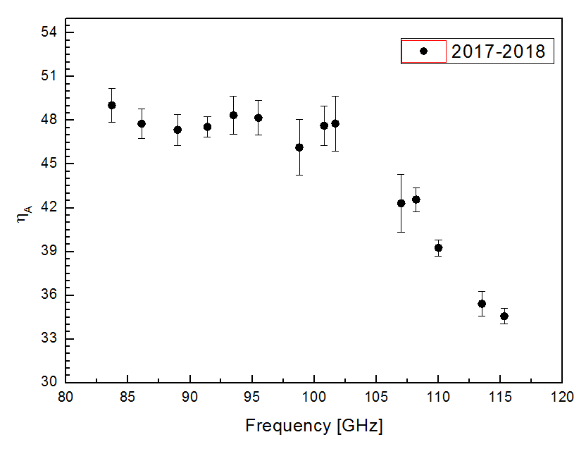

Ye Xu, Yingxi Zuo, Xuguo Zhang, Zhenqiang Li, Yang Li,
Jibin Li, Hailong Zhang,Fengjuan Jin, Feng Shi
Binggang Ju, Jixian Sun, Dengrong Lu,Min Wang,Kun Yan,
Yongxing Zhang, Ping Yan,Shengyu Jin,Chunsheng Luo
Qinghai Radio Observing Station of Purple Mountain Observatory, CAS Delingha MM-Wave Observing Station
2018.11
-
Overview
During this summer (Jul.-Aug. 2018) — the maintaining and upgrading season — telescope mechanical transmission and superconducting receiver system have been inspected and maintained. Up to August 12th all the maintaining and upgrading items in schedule have been completed successively.
The comprehensive performance astronomical tests were started on August 13th and lasted twelve days. The tests include pointing, sub-reflector focusing, power pattern of the nine-beam receiver, interval and efficiency array of the 9 beams, intensities and velocities of standard sources, etc.
The main contents and results of the maintenance, upgrading and test are briefly reported as the following:
-
The panel of antenna was adjusted by photogrammetry[1]. Since 2009, the antenna panel was measured using the industrial digital photogrammetry system with EL=52° as the reference position every year. According to the measured results, the antenna panel was presetting adjusted. The precision RMS of the adjusted antenna panel is 78μm this year.
-
The mechanical system of main reflector and sub-reflector were overhauled [2].The electric motor, high speed transmission gearbox of AZ and EL of main reflector was overhauled and oiled. The large gears of AZ and EL of main reflector was cleaned and oiled.The mechanical system of sub-reflector was overhauled(the electric motor, coupling, gear box, worm and worm gear were inspected and oiled). When assembling the high speed transmission gearbox, monitoring of electrical current of motor was applied to ensure that the parts are well assembled.The input axis of transmission box of AZ2 (north) motor was replaced with a new one.
-
The main reflector panel of antenna was cleaned. After operation of an observation season, the parabolic surface was covered by dust, which seriously affected the performance of the telescope. During the summer maintenance, the telescope panel was thoroughly cleaned and maintained so as to ensure the reflection and efficiency of the telescope, and prolong service life of the main panel.
-
Receiver system was maintained[3]. All equipments of the receiver system were overhauled, upgraded or replaced, including: ①the new BiasT was adopted for the mixers of Beam3 and Beam6;②the new hybrid Bridge was adopted for the Beam3, Beam6,Beam8 and Beam9;③the AFM-6-110-13 (75-113GHz) local oscillator frequency multiplier was taken the place of the AFM-x6-110 (87-113GHz) multiplier which has been used for 8 years[15];④in consideration of the abrupt change of the temperature recovery process in dewar, the L003 HEMT amplifier was taken the place of the 376D HEMT amplifier for Beam9（LSB);⑤parts of the bias cables and Nickel copper cables were maintained;⑥the test of TRX/IRR was carried out, after the testing of the noise temperature of receiver and measurement of beams, the microwave car was installed and the balance adjusting of antenna was carried out;⑦the dust on the instruments was cleaned, the heat conductive Silicone grease was daubed on the chips of FFTS card, the refrigerating machine was replaced, the helium was replaced with compressor in order to improve purity, the air conditioner was added before the compressor, etc.
-
Performance
-
Surface
The Delingha mm-wave telescope is an alt-azimuth mounting telescope. The diameter of the primary reflector disk is 13.7 m (45 feet). The optical system is Cassegrain, with the receiver working at the Cassegrain focus. After the maintaining and upgrading season of 2018, the surface accuracy of the main reflector is 78 μm[1].
-
TrackingOur tests indicate that the tracking error is rms=1.35''in AZ, and rms=1.05'' in EL. For the most part of sky, the tracking error is around 1''-3'' [4], which can fulfill the needs of astronomical observations (based on the beam size of telescope, tracking error less than 5'' will guarantee the accuracy). Figure 2.2.1 shows the tracking errors in AZ and EL.
Figure 2.2.1 Histograms of the tracking errors in AZ (left) and EL (right).
96.2% below 3'' in AZ，99.6% below 3'' in EL. [4]
-
Pointing
The “five-point pointing observation” toward planets (Jupiter,Venus etc.) in “continuum total power receiving mode” was performed, and so was the “five-point pointing observation” toward line emission point sources, such as planetary nebular and SiO（2-1）maser sources. In 7 days observation, 968 groups of data were fitted by modified pointing model. From 2006-2007 observation season, a pointing model with 10 parameters was applied to fit southern and northern separately. This kind of model works well in the whole sky. Figure 2.3.1 shows the sky coverage of a pointing event. Figure 2.3.2 is the residue distribution of the fit in the southern and northern sky. The results indicate that the pointing error is rms=3.9'' in south [5] and rms=4.9'' in north [6]. During the comprehensive test, “pointing observation -> model fit -> modification and check” process was carried out many times (repetition was necessary). Repeated tests indicate that the whole sky pointing error is less than 5''.
Figure 2.3.1 Sky coverage of IRC+10216,VENUS,JUPITER,ORIA,X-Cyg in the south[5] and
NGC7027,R-Cas,TX-Cam in the north[6] during the “five-point” punting calibration observations .
Figure 2.3.2 The residue distribution in AZ and EL after the fitting. left: for the southern sky, with the major axis of 2.9''and minor axis of 2.4'', the position angle is -15.8°[5]. right: for the northern sky, with the major axis of 3.7''and the minor axis of 3.1'', the position angle is 40.7°[6].
In the subsequent observation period, the pointing condition will also be checked periodically by observing the CO lines of some point sources (e.g. some late-phase star like IRC+10216) or some extended CO sources with definite distribution features (e.g. S140 etc.). As a routine test item, the pointing status is tested and verified every month in an observation semester.
-
Intensity scale and efficiency
Using standard chopper-wheel calibration method (Ulich & Haas 1976, ApJS, 30, 247, and references thereafter) for molecular lines, the temperature thus derived is the one corrected for the atmospheric and ohmic attenuation, which is denoted as TA* in the literature. For extended sources, this temperature needs to be further corrected by the main beam efficiency ηmb to yield an "observational radiation temperature" TR*, which can be compared with results obtained from other telescopes of the similar type. This temperature is the convolution between the ideal main beam and the source brightness temperature distribution. Notice that all the 12CO, 13CO and C18O original data has been calibrated by the beam efficiency according to .
The half-power-beam-width (HPBW) reflects the resolution ability of a telescope, which can be calculated by HPBW=kλ/D, where λ is the working wavelength, and D is the aperture size, and k depends on the illuminating function. At a local oscillating frequency of 112.6 GHz, for USB (115.2 GHz) the HPBW is 48.3±2.0'' in AZ and 48.3±1.9'' in EL, for LSB (110.2 GHz) the HPBW is 50.7±2.2'' in AZ and 50.5±2.2'' in EL[16][17].
The two-dimensional distribution of the beam can be obtained by scanning over an object. Figure 2.4.1 and 2.4.2 are the OTF two-dimensional scanning results of Venus [8]. Figure 2.4.3 and 2.4.4 are the OTF one-dimensional scanning results of Venus [8].
Figure 2.4.1 The telescope two-dimensional power pattern obtained from OTF observing to Venus. (USB: 115.2GHz) The regrid step is 20''.
Figure 2.4.2 The telescope two-dimensional power pattern obtained from OTF observing to Venus. (LSB: 110.2GHz) The regrid step is 20''.
Figure 2.4.3 EL dependent intensity distribution from one-dimensional scanning of the Venus in AZ (beam5, USB: 115.2GHz). During the observation the step is 10″, the integration time of each position is 5 sec, and the absolute intensity calibration has been used to get the data of antenna temperature.
Figure 2.4.4 EL dependent intensity distribution from one dimensional scanning of the Venus in AZ (beam5, LSB: 110.2GHz). During the observation the step is 10″, the integration time of each position is 5 sec, and the absolute intensity calibration has been used to get the data of antenna temperature.
The moon efficiency is the reflection of beam efficiency when observing an extended source. After the pointing work we set the local oscillating frequency to 112.6 GHz and scanned the moon in one dimension. After the moon phase correction, we obtained the moon efficiencies [9] of nine beams for USB and LSB listed in table 2.4.1.
Table 2.4.1 moon efficiency(%) of USB and LSB of nine beams
| Side Band | beam1 | beam2 | beam3 | beam4 | beam5 | beam6 | beam7 | beam8 | beam9 |
| USB | 55.7±1.0 | 56.1±0.9 | 56.4±0.9 | 55.6±0.9 | 58.8±1.0 | 58.6±0.9 | 56.9±0.9 | 58.0±0.9 | 58.3±0.9 |
| LSB | 60.8±1.0 | 60.3±1.0 | 60.5±1.0 | 61.8±1.0 | 61.9±1.0 | 62.2±1.0 | 61.1±1.0 | 62.3±1.0 | 63.0±1.0 |
The moon efficiency is higher than the beam efficiency obtained from observations of planets. The reason is that the former includes contribution from forward side lobes. In the practical observations of some molecular clouds whose scale usually is greater than the beam widths of telescope, the beam efficiency is closer to the moon efficiency. However, this is usually not wanted by observers, as the side lobes receive radiation from directions other than the targeted position. Therefore, in the observation toward an extended source, lower forward side lobes are needed. When the side lobes can be effectively suppressed, the main beam efficiency obtained from observations of planets will get closer to the moon efficiency.
Figure 2.4.5 Intensity distribution from one-dimensional scanning of the moon. During the observation the receiver LO is 112.6 GHz, the scanning rage is ±1500″，the step is 20″. [10] The moon phase ranges from 371.97°to 372.33°, the moon brightness temperature is 189.7K~208.3K.Left: USB (115.2GHz). Right: LSB (110.2GHz).
For a telescope that is mainly used to observe extended sources like molecular clouds, its main beam efficiency is a very important parameter. Ideally, With the purpose of measurement of main beam efficiency, an astronomical object with the same size as the telescope beam size is needed. However, in fact, there is no such an astronomical object (or artificial object) can meet the requirement. Therefore, the main beam efficiency is obtained by observing the moon, the planet, extended source with line emission, point source with line emission, etc. In the five-point pointing observation, we get the temperature results by calibrating the observational results with the foreground blackbody source, and get the telescope beam width at the mean time. These results enable us to estimate the aperture efficiency and the main beam efficiency of the telescope.
Currently a 3×3 multibeam superconducting receiver is used in the 13.7m MM-wavelength telescope. Precisely measurements of the interval matrix and the efficiency matrix of the nine beams are necessary. In the testing, using five-point observations of the nine beams rotation toward continuum sources and CO sources of high signal-to-noise ratio, we fitted and then obtained the beam width, peak intensities, position errors etc. of each beam. Then, the main beam efficiency and aperture efficiency of the central beam (the fifth beam), as well as the interval matrix in AZ and EL direction relative to the central beam could be estimated. Results are presented in the following figures.
Figure 2.4.6 The relation between main beam efficiency and the EL of the pointing center (5th beam). Left: USB (115.2GHz); Right: LSB (110.2 GHz). [7] [16]
Figure2.4.7 The relation between aperture efficiency and the EL of the pointing center (5th beam). Left: USB (115.2GHz); Right: LSB (110.2 GHz). [7] [16]
Using the von Hoerner-Wong efficiency of structure function (equation 1) to fit the efficiency test results, we obtained a series of parameters, which are not only accordance with the actual case of telescope but also comprehensible in physics[10].
（1）
Fitting results are listed in table 2.4.2 [7].
Table 2.4.2 Fitting parameters of main beam efficiencies for USB and LSB
| | A(%) | hh(mm) | hz(mm) | el0(°) | R-square | RMSE |
| USB | 50.91 | 0.088 | 0.191 | 50.9 | 0.81 | 0.83 |
| LSB | 55.29 | 0.089 | 0.220 | 51.6 | 0.78 | 0.83 |
Using five points tracking observation mode with beam 5 toward Jupiter, the local oscillating frequency was set to 86GHz, 88 GHz, 96 GHz , 98 GHz , 104 GHz, 110 GHz in turn. Results are listed in table 2.4.3. [7] [16]
Table 2.4.3 Main beam efficiencies, aperture efficiencies and beam widths in different frequencies.
| Frequency(GHz) | 83.7 | 86.1 | 89.0 | 91.4 | 93.5 | 95.5 | 98.8 | 100.8 | 101.7 | 107.0 | 108.2 | 110.0 | 113.5 | 115.3 |
| Main beam Efficiency(%) | 59.2 | 57.0 | 59.8 | 57.5 | 67.9 | 61.7 | 66.5 | 62.0 | 58.7 | 55.0 | 54.8 | 54.1 | 49.2 | 48.9 |
| Aperture Efficiency(%) | 49.0 | 47.8 | 47.4 | 47.6 | 48.3 | 48.2 | 46.2 | 47.6 | 47.8 | 42.3 | 42.6 | 39.3 | 35.4 | 34.6 |
| HPBW_AZ (") | 63.9 | 61.6 | 61.2 | 58.0 | 62.2 | 55.4 | 59.9 | 53.2 | 51.6 | 50.2 | 49.4 | 51.5 | 48.8 | 49.7 |
| HPBW_EL (") | 61.7 | 59.7 | 59.5 | 57.0 | 58.4 | 57.9 | 55.7 | 55.1 | 52.8 | 51.9 | 50.8 | 50.6 | 50.5 | 49.0 |

Figure 2.4.8 Left: the relation between aperture efficiency and frequency; Right: the relation between the main beam efficiency and frequency [7] [16]
Figure 2.4.9 The relation between beam width and the observing wavelength[7] [16]
The relation between the beam width and the observed wave-length can be formulated as follows: [7] [16]
The testing results of interval matrix are listed in Table 2.4.4. [8]
| | beam1 | beam2 | beam3 | beam4 | beam5 | beam6 | beam7 | beam8 | beam9 |
| △AZ(") | 174.0 | 0.9 | -170.9 | 171.8 | -0.1 | -170.9 | 170.1 | -1.7 | -172.2 |
| △EL(") | -171.1 | -171.5 | -171.5 | 3.4 | 0.6 | -1.7 | 174.3 | 171.4 | 171.0 |
During the efficiency matrix test, the standard sources of S140, DR21, NGC2264 were observed by the nine beams in sequence. The normalized efficiency matrix relative to the central beam was obtained by calculating the ratio of peak intensities as well as integrated intensities of 12CO and 13CO between each beam and the central beam. Results are listed in Table 2.4.5. [11]
Table 2.4.5 beam efficiency matrix
| Side Band | beam1 | beam2 | beam3 | beam4 | beam5 | beam6 | beam7 | beam8 | beam9 |
| USB (115.2GHz) | 0.89 | 0.95 | 0.89 | 0.88 | 1.00 | 0.89 | 0.90 | 0.97 | 0.96 |
| LSB (110.2GHz) | 0.94 | 0.96 | 0.88 | 0.90 | 1.00 | 0.96 | 0.95 | 0.95 | 0.92 |
Regarding the telescope as a whole system, the observational accuracy of standard line sources usually indicates the practical accuracy that can be achieved. In the operation, we consider it as an indicator of the instrumental performance and status, validity of observation procedure and data processing.
Due to the gravitational deformation of the antenna disk as well as the optical coupling changes, the antenna temperature observed depends on the elevation angle to some extent. During "astronomical tests of comprehensive performance", extended line sources S140 and NGC2264 were observed in their central points. And all of the observable elevation angles were covered. The observation results are corrected by the above efficiency correction formula together with the efficiency matrix. Thereafter, the relations between spectrum peak intensities and elevations are obtained (see Figure 2.4.10 and 2.4.11).
12CO peak intensities of S140 from nine beams according to different EL. Data have been calibrated by efficiency matrix and [1
Figure 2.4.10 The
Figure 2.4.11 The 13CO peak intensities of NGC2264 from nine beams according to different EL. Data have been calibrated by efficiency matrix and main beam matrix [11]
In Figure 2.4.10 and Figure 2.4.11, we could see that the variation of 12CO(1-0) peak intensities for standard source S140 in the north and 13CO（1-0） peak intensities for standard source NGC2264 in the south, calibrated by the efficiency matrix together with the main beam efficiency, show little dependencies on EL. And an entire scanning by OTF observation could eliminate such effect, which averages over the points with different ELs.
-
Receiver
The SSAR is a MM-wavelength 3×3 multi-beam receiver, the data production rate is about 25 MB/s. This instrument mainly includes: 9 Sideband Separating SIS mixers, no tuning digital LO source, all digital bias power supplies, independent IF model, broad band high resolution digital spectrum analyzer, and many other new techniques, which successfully accomplished integrated multi-beam receiver system for MM wave band. This is the first MM-wavelength multi-beam receiver that is based on sideband separation technology in the world. And also, it is the first multi-beam receiver in the field of radio astronomy in China. The frequency range of the SSAR receiver is 85-115 GHz. In this season, when the LO frequency is working on the range 86-112.6 GHz, the measured value of receiver noise Trx is shown in Figure 2.5.1 [12], the system temperature Tsys (including effect of the atmospheric and dome) is shown in Figure 2.5.2 [13]. Observers can estimate the integration time and sensitivity of the receiver from these data.
Figure 2.5.1 TRX at different frequency points. The x-axis denotes beam number, the y-axis denotes noise temperature of one side band. Different shapes denote different LO frequencies[12].
Figure 2.5.2 Distributions of system temperatures (LO frequency @ 112.6GHz). The x-axis denotes beam number, the y-axis denotes system temperature of one side. Filled red circles denote LSB receiver (110.2GHz); black filled squares denote USB receiver (115.2GHz). The system temperature includes noises from the receiver, the antenna and the optical system, the dome, the membrane and the atmosphere. [13]
Figure 2.5.3 The stability of the receiver (The data sampling rate was 3 Hz. One data line get from IF detector output by 1 hour were used by Allan variance analysis. [12]
In this observation season, telescope will work in the whole 85-115 GHz frequency band. Multiple measurements demonstrated that, when the SIS mixer works at the first step, the ten-minutes normalization stability is △G/G＜2X10-3 .Figure 2.5.3 shows the typical results of normalization stability measurements in the working frequency range.
-
High-resolution digital spectrum analyzer
The SSAR system installed into the 13.7m telescope has a backend made up of 18 high resolution FFTS digital spectrum analyzers, which can work at 1000 MHz or 200 MHz. And each band has 16384 channels. The tested results indicate that those 18 digital spectrum analyzers break through in key technical marks such as bandwidth, resolution, dynamic range, stability, etc. It demonstrates potential for receiving extra-galactic spectrum lines, making high-resolution observations, and performing deep integration. According tests, the Allan time of the whole receiver system, taking atmosphere variation into account, is greater than 100 seconds no matter which bandwidth the FFTS work at [14]. FFTS can simultaneously receive multiple spectral lines. Observers can know more with the help of “calculation software for observing line frequency (FFTS freqset)” (available for download in our website: http://www.radioast.csdb.cn/tools.php).
Talbe 2.6.1 Main parameters of the telescope FFTS backend
| Bandwidth | 12CO | 13CO |
| Channel frequency interval（kHz） | Channel velocity interval（km/s） | Channel frequency interval（kHz） | Channel velocity interval（km/s） |
| 1000 MHz | 61.0 | 0.159 | 61.0 | 0.167 |
| 200 MHz | 12.2 | 0.032 | 12.2 | 0.033 |
-
Data storage
To store huge amounts of data produced by OTF observation, a data storage system is equipped, which consists of two DELL PoweEdge R910 installed Scientific Linux 5.4 operating system. The storage capacity is 300 TB, and it is also used for OTF data preprocessing.
-
Observing mode
-
In receiver operating frequency range, telescope works at single sideband using position-switch mode to operate single point observation.
-
Using “superconducting imaging spectrometer” and OTF mode to observe lines of CO and its isotopes simultaneously.
-
The standard chopper-wheel method is used for temperature calibration.
-
Data format
The data output is in the international standard FITS format. Observers can use GILDAS/CLASS or other software to reduce and process data.
Notice that GILDAS/CLASS is a piece of software used for processing radio astronomical data, which was jointly developed by Grenoble observatory and IRAM.
-
Data Downloading
The observation data can be downloaded from the database on the website of http://www.radioast.csdb.cn and http://mirror.radioast.csdb.cn. To download the unpublicized data, observer needs to log in. The user name is the observer’s issue number and the password is given by the observation assistant. Observer can look over the observational records on the website http://www.radioast.csdb.cn/viewrecord.php .
-
Application and Scheduling
In 2018-2019 observing semester, the up-to-date information of Delingha 13.7m MM-wavelength telescope will be posted on the website of our site in time: http://www.dlh.pmo.cas.cn. The domestic and foreign experts will be invited by Delingha millimeter wave observatory to use the telescope for the observation and research of astronomical and related scientific.The proposals are received by 13.7m telescope all the year round.All proposals are managed via dlhproposal@pmo.ac.cn. The formatted text of proposal can be downloaded from the website of our observatory http://www.dlh.pmo.cas.cn/xzzq/dqhd/. In case of competition, the proposals will be evaluated according to its scientific significance and the feasibility of the projects by the experts of “millimeter waves council”.Our observatory will arrange the observation time in time and notify the PI or linkman in advance according to the requirements of the proposal.
-
Project examples of the telescope in the several previous semesters
-
Detection of physical structure of the Galactic molecular clouds;
-
High speed gas outflow and dynamics of young stars;
-
Interstellar chemistry;
-
Molecular gas distribution in the Galactic star-forming regions;
-
Galactic dynamics;
-
The interaction between the supernova remnant and interstellar medium, cosmic ray sources;
-
Molecular gas observation of the stellar evolution and the late-type stars;
-
Molecular line observation of the solar system objects;
-
Observational study of the moon radiation in the MM band;
-
Observational study of the propagation and transmission properties of MM radiation in the terrestrial atmosphere.
-
Observational study of the Starburst Galaxies.
-
Using the telescope
-
Data progressing and backup
The data storage system is also used for OTF data preprocessing.The pre-processed data will be uploaded to “Millimeter Wave Radio Astronomy Database (http://www.radioast.csdb.cn)”. For data downloading, observer needs to log in the database website and then click “download CLASS format data” to go to data download web page (user name and password are offered from observation assistant). Observational data by Position-switch observing mode is single point FITS files and CLASS format files (14m file), and after regrid, the data by OTF observing mode is CLASS format files (.bur file) of 30″×30″ pixel size, the bur files from multiple observations to the same source will be combined into a fitscube file. The appointed assistant could provide help with the data processing process.
After one year of exclusive occupation of the data by the project PI, the data will become open and shared, according to the international convention. Cross-year projects will become open and shared one year after the last day of the project. Anyone could download the open and shared data from “Millimeter Wave Radio Astronomy Database”.
-
Transportation and living service
Supportive services are provided by the observatory, including reception, accommodation, transportation, Internet connection, and emergent oxygen service. The working and living conditions at the observatory have been improved a lot after decorations in the summer of 2017. Observers have to pay for the accommodation and transportation by themselves. As the site is in the northwest China, where the transportation is not very convenient, we suggest the visitors book the tickets ahead of time. There are flights from Delingha to Xining at present.
We offer transportation services from Delingha train station to our observatory. Please contact Mr. Binggang Ju of the arrival time and detail requests in advance. The telephone number is +86-0977-8224969.
The Delingha station is located in the Qinghai-Tibet Plateau, where the weather is dry and the oxygen is rare, and the winter is severely cold. Visitors should bring enough warm clothes and get well prepared.
-
Suggestions, comments and further information
The upgrade and reformation of this report and the astronomical tests of comprehensive performances are conducted in joint effort of the staff in the observatory and the millimeter-submillimeter wavelength laboratory, as well as the CAS Nanjing Astronomical Instruments Center and the star formation group of purple mountain observatory. For further information, please contact our Professor Ye Xu (xuye@pmo.ac.cn); any comments (including any questions or criticisms about this report) or suggestions can also be sent to the address. Any suggestions or comments on the astronomical or technical problems, as well as the logistic services, are all welcome.
Reference
-
孙继先、符广龙、李海勇、颜昆、张海龙、石峰、罗春盛、靳生玉、李晶晶、边帅博，2018.8.14，《2018年夏季维护天线面板照相测量总结》，德令哈毫米波观测基地；
-
张海龙、孙继先、李阳、石峰、李海勇、李积斌、符广龙、邵伯春、郑四头，2018.7.15，《2018年夏季维护天线机械维护小结》，德令哈毫米波观测基地。
-
运行组、观测组、后勤组，2018.8.13，《2018年夏季维护小结》，德令哈毫米波观测基地；
-
孙继先、石峰、张海龙，2018.8.14，《2018夏季维护天线跟踪误差测试报告》，德令哈毫米波观测基地；
-
孙继先、逯登荣、张永兴、靳生玉、颜昆，2018.8.16，《五点指向观测快报(南天)(2018-08-15)》，德令哈毫米波观测基地；
-
孙继先，逯登荣、张永兴、靳生玉、罗春盛、颜昆，2018.8.21，《五点指向观测快报(北天)(2018-08-20)》，德令哈毫米波观测基地；
-
孙继先、逯登荣、靳生玉、张永兴，2017.8.14，《波束效率测试简报-JUPITER (20170811)》，德令哈毫米波观测基地；
-
逯登荣、孙继先、张永兴、颜昆、靳生玉、罗春盛，2018.8.27，《方向图扫描报告（2018-08-27）》，德令哈毫米波观测基地；
-
逯登荣、孙继先、罗春盛，2018.8.27，《月面效率测试报告（20180826）》，德令哈毫米波观测基地；
-
杨戟，2008.8.16，《关于进一步提高13.7米望远镜天线面精度的技术路线图v1.1》，德令哈毫米波观测基地；
-
王敏、孙继先，2018.9.28，《标准源观测报告（波束效率矩阵、视向速度等）（2018-09-28）》，德令哈毫米波观测基地；
-
李积斌、张旭国、李振强、庞兴海、张海龙、金风娟、石峰、孙继先、逯登荣、张永兴、罗春盛、靳生玉、符广龙、李海勇，2018.8.11，《2018年夏季维护通报三》，德令哈毫米波观测基地；
-
张旭国、李振强、李积斌、孙继先、逯登荣，2018.8.14，《Tsys测试结果通报2018-8-13》，德令哈毫米波观测基地；
-
逯登荣、孙继先、颜昆、张永兴、靳生玉、罗春盛，2018.8.27《FFTS Allen方差测试（2018-08-27）》，德令哈毫米波观测基地；
-
李积斌、张旭国、庞兴海、李振强、张海龙，2018.7.19《2018年本振六倍频维护》，德令哈毫米波观测基地；
-
张永兴、孙继先、逯登荣、颜昆，2018.11.28，《波束效率测试简报-VENUS (20181128)》，德令哈毫米波观测基地。